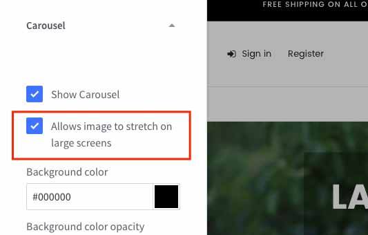

FAQs¶
How to make slideshow stretched full width?¶

Open Theme Editor > Carousel section > check to the option Allows image to stretch on large screens:

How to remove the leaves background image on the first banner of 'Default' style?¶
To remove this leaves image, open Edit Theme Files, open file assets/scss/_theme-custom.scss_. Add the code below to the end of file:
.emthemesModez-banner--laparis1:first-child .emthemesModez-banner-figcaption {
background-image: none;
}
Save and refresh your homepage to see changes.